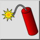
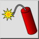
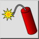
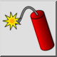

Esplodi
Barra degli strumenti / Icona:
 

Menù: Blocco > Esplodi
Scorciatoia: X, P
Comandi: explode | xp
Questa è una traduzione automatica.
Barra degli strumenti / Icona:
 

Menù: Blocco > Esplodi
Scorciatoia: X, P
Comandi: explode | xp
Converte riferimenti di blocchi, polilinee, spline, ellissi, testi, dimensioni e tratteggi in entità di base. Le quote vengono suddivise in linee, triangoli ed entità di testo. Le entità di testo sono suddivise in polilinee (o linee, archi e spline). Le spline vengono convertite in polilinee con segmenti d'arco collegati tangenzialmente. Le ellissi sono convertite in polilinee a segmenti d'arco. Le polilinee sono suddivise in segmenti sciolti. I boccaporti sono suddivisi in linee. I riempimenti solidi vengono convertiti nel contorno del riempimento solido.